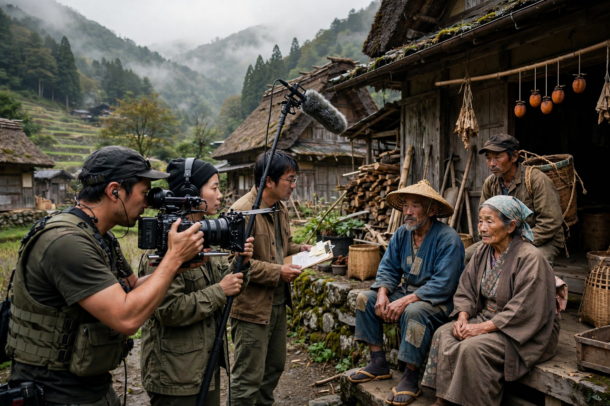

| Shōhei Imamura | |
| Born | September 15, 1926, Tokyo, Japan |
|---|---|
| Died | May 30, 2006 (aged 79), Tokyo, Japan |
| Occupation | Film director, screenwriter |
| Years active | 1951–2002 |
| Awards | Two Palmes d'Or: The Ballad of Narayama (1983), The Eel (1997) |

Shōhei Imamura (今村 昌平, Imamura Shōhei; September 15, 1926 – May 30, 2006) was a Japanese film director, one of only eight directors to win the Palme d'Or at Cannes twice. His films examine the lower strata of Japanese society with earthy humor, eroticism, and an anthropologist's curiosity about instinct and survival.
Imamura entered Shochiku in 1951 as an assistant to Yasujirō Ozu, whose refined style he rebelled against — declaring himself interested in the "messy, sweaty" Japan Ozu excluded. At Nikkatsu he directed Pigs and Battleships (1961) and The Insect Woman (1963), studies of tenacious women and the underworld around American military bases. Going independent, he made The Profound Desire of the Gods (1968) and documentaries such as A Man Vanishes (1967), which dissolves from a missing-persons investigation into a meditation on truth itself.
After a decade in television documentary, Imamura returned to features with Vengeance Is Mine (1979), a chilling portrait of a real-life serial killer. The Ballad of Narayama (1983) and The Eel (1997) won the Palme d'Or at Cannes, confirming his late-career stature; his final films included Dr. Akagi (1998) and Warm Water Under a Red Bridge (2001). He founded the Yokohama Broadcasting and Film School (now the Japan Institute of the Moving Image) in 1975.